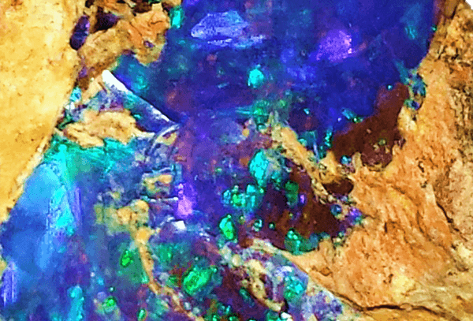
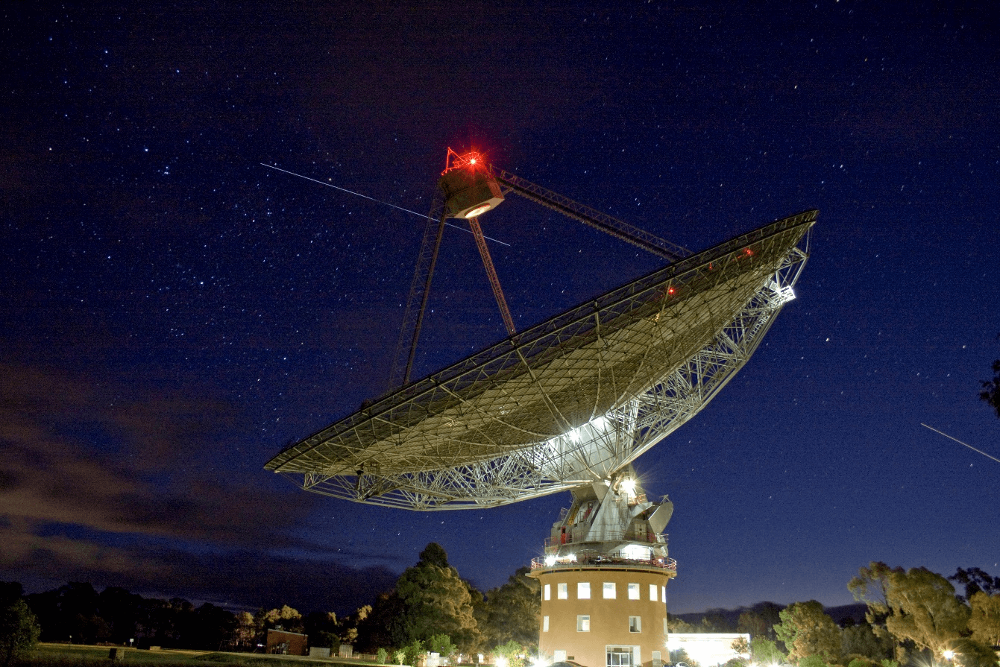
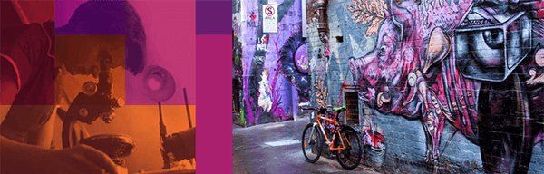
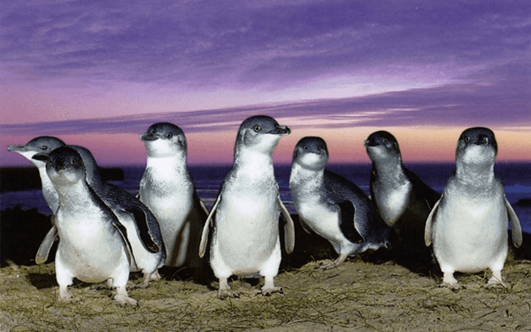

There’s something brewing in MelbourneFirstly, we hope that those of you receiving this communication are safe and well. Secondly, G’day! Together with my fellow Organising Committee members and SCANZ, the Society of Crystallographers in Australia and New Zealand, as the Host Organisation, we want to thank the IUCr for giving us the honour of hosting the IUCr Congress and Assembly in Australia, in August 2023. We’re ready here in Melbourne to welcome the Congress back to Oceania after 36 years. Between now and when we gather together in 2023, you’ll be hearing from us regularly about the plans for IUCr 2023, such as program, touring opportunities around Australia (well, if you are coming this far, you should plan to stay and enjoy our beautiful country) and how you can get involved and participate fully. If there are things you want to hear about as you plan your journey to Australia, don’t be shy – we are here to listen. Drop us a note and we’ll do our best to provide our best advice. We look forward to you sharing our journey to IUCr 2023. Stay safe, stay connected! Michael |
We are planning a ‘gem’ of a CongressIt’s in our DNA to change things up a bit and we plan to do the same in 2023. Since we were awarded the hosting rights in Hyderabad in 2017, the Melbourne Organising Committee has been preparing a unique Congress for you. We are working with the City of Melbourne to maximise opportunities for generating public engagement and education. Plus optimising your experiences at the Congress by making sure the IUCr 2023 is affordable and comfortable for all participants, including:
By the way, the Opals are the Australian women’s senior national basketball team named, of course, after our official national gemstone.
|
Key DatesYou can expect a fantastic experience in Melbourne, so put 22 – 29 August 2023 in your diaries, stay connected by registering your expression of interest via the website and prepare to turn crystallography upside down.
|
The Great Down Under Road TripThe Oceania region is home to world-leading crystallography research, including powder diffraction, solid-state chemistry, structural immunology, structure-based drug discovery in cancer and infection, charge density research, coherent scattering, coordination polymers, and metal-organic frameworks. This will be a potential once-in-a-lifetime opportunity for many of our community to experience Australia and the unique delights of the Oceania region. Over the coming months, we will share with you some of the locations (on and off the beaten track) that maybe of particular interest to us crystallographers. Along the way, we will point out some areas of interest and some not so common attractions. Road Stops will include a quick trip across the "ditch" to New Zealand … just like the dessert, pavlova, and the actor Sam Neill, we Aussies like to claim anything good that comes from the Kiwis. As we are launching our website, what better first stop than Australia’s historic connection to the space race! Known to locals as ‘The Dish’ the Parkes Radio Telescope is the first stop of our crystallographic road trip. Located 5 hours’ drive West from Sydney, this 64 metre radio telescope celebrated its 60th anniversary in October 2021 and is still observing, rain or shine, every day still. In 2020 local Wiradjuri elders gave the telescope the name Murriyang, which represents the 'Skyworld' where a prominent creator spirit of the Wiradjuri Dreaming, Biyaami (Baiame), lives. Many will recognise Murriyang from the film ‘The Dish’, that told the tale of Australia’s involvement with the Apollo Moon landings. Murriyang has long been part of NASA’s Deep Space Network, tracking the first interplanetary space mission to Venus, and as depicted in the film, it was a was a prime receiving station for the Apollo 11 landing. The Apollo missions, six in all, brought back nearly 400 kg of rock which has been laboriously studied on its return to Earth. In these samples three new minerals were identified by structural scientist colleagues – armalcolite, pyroxferroite and tranquillityite. At the time each were thought to be unique to the moon but over the years have all been identified in Earth (and Martian) rocks. The last of these moon minerals to be found terrestrially was tranquillityite, which was discovered in a rock from Western Australia in 2012. Murriyang is well worth a visit, the CSIRO operates a fantastic visitor centre at the location which explains the history and world-class science that ‘The Dish’ still undertakes. The centre is also the home to a yearly exhibition of the Malin awards, the region’s prime astrophotography competition – so you can be inspired by Earth and Sky on your visit! |
Photo 51 – IUCr 2023 Photo CompetitionYou might imagine Parisian cafes, Italian bistros, or even traditional Turkish coffee houses when you think of coffee culture. Melbourne’s love affair with coffee can be traced back to the arrival of Italian and Greek immigrants after World War II. As a result, Melbourne is a mecca for coffee lovers. Curious explorers wander through the city's laneways, stopping at cafes to take a seat on a stool or milk crate under colourful graffiti works by talented street artists. Melbourne celebrates a vibrant artistic culture that blends the historical with the contemporary seamlessly. Home to some of Australia’s most prestigious sporting events including FIFA Women’s World Cup, which happens to be timely scheduled during August 2023. With this inspiration as the brief, we invite you to take a picture of yourself that best represents coffee, art & culture or sporting events in your hometown. The mandatory inclusion is you must be in the captured image. We encourage you to think a little differently, have fun and be creative. The winner of each of the three photographic categories will win a complimentary Full Registration to IUCr 2023.
 |